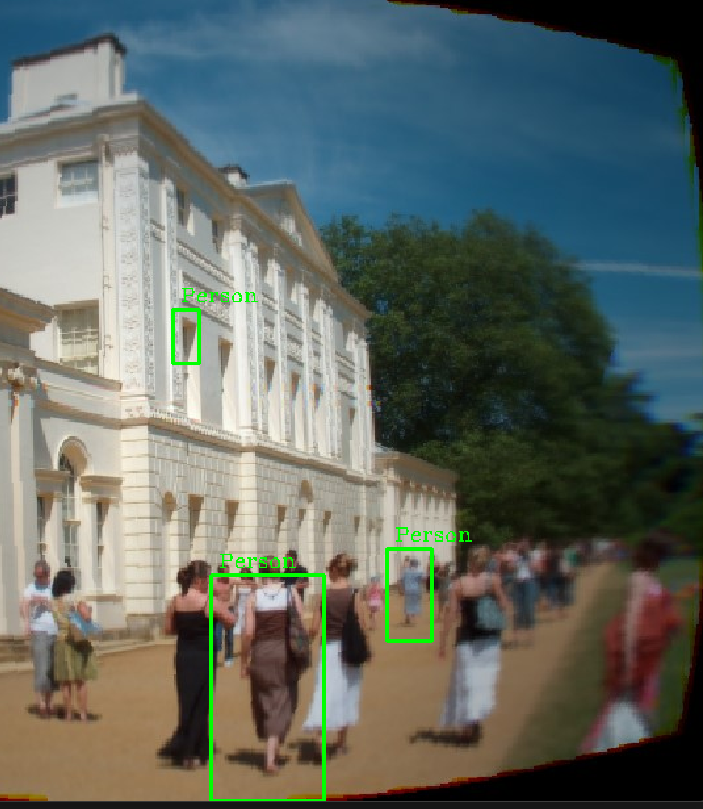
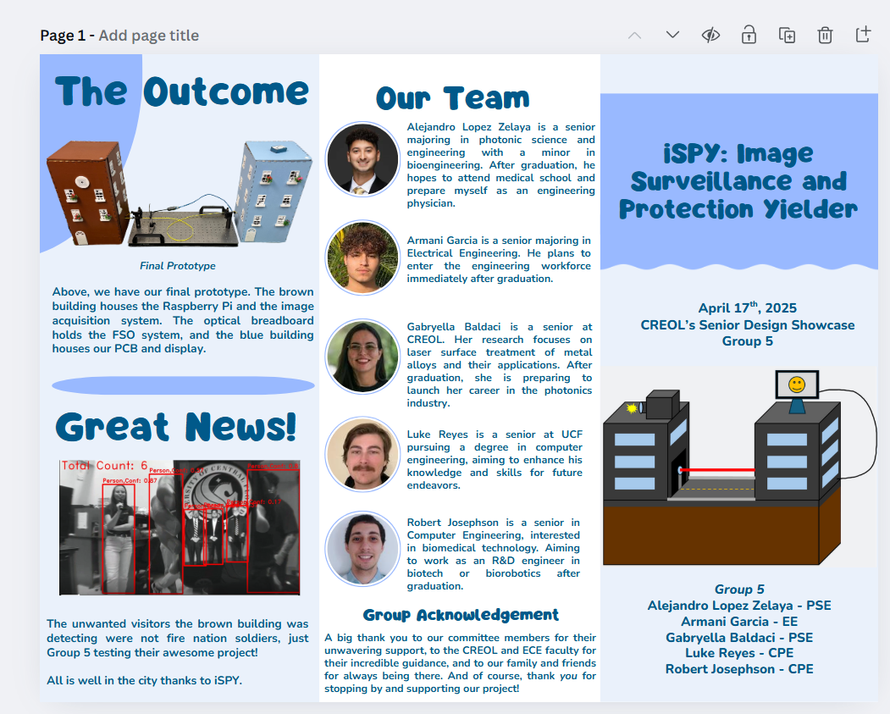
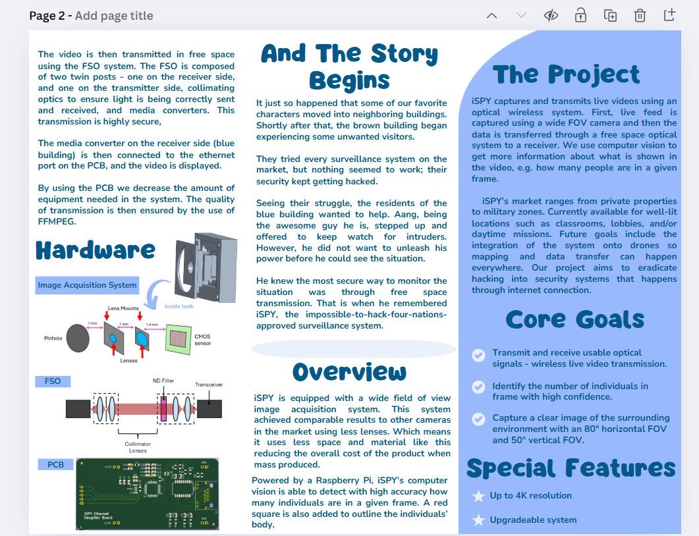
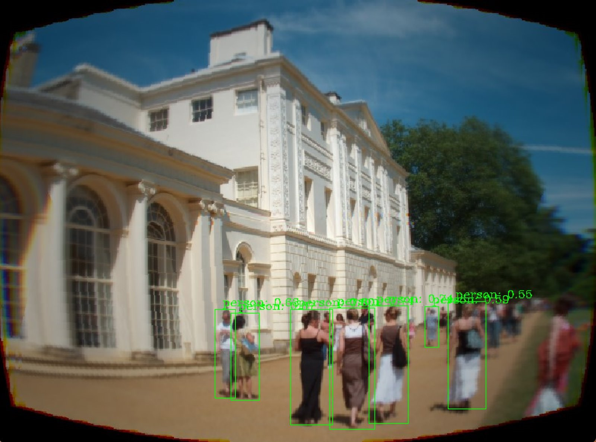
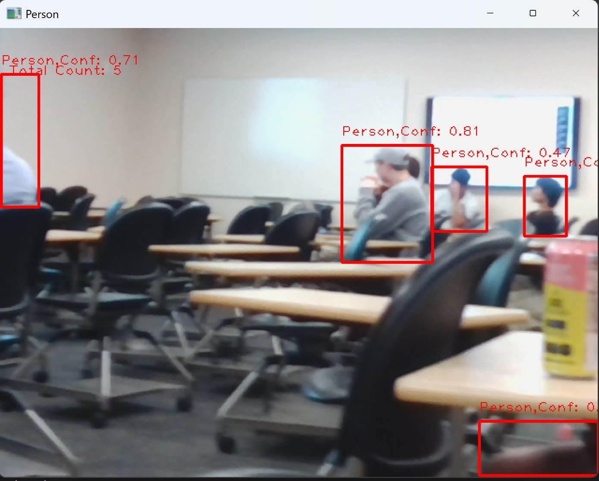
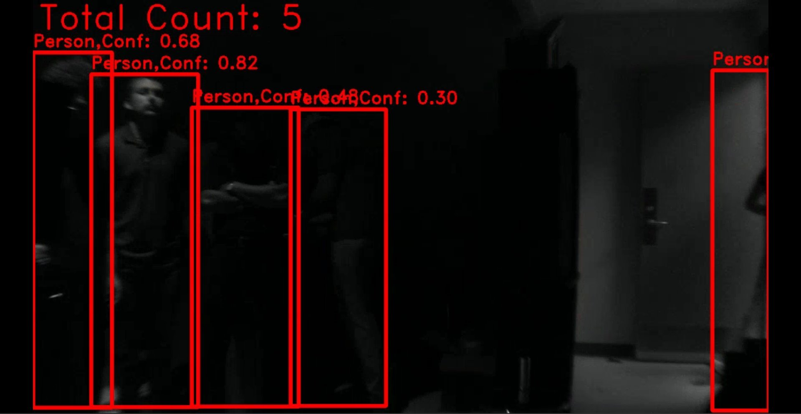
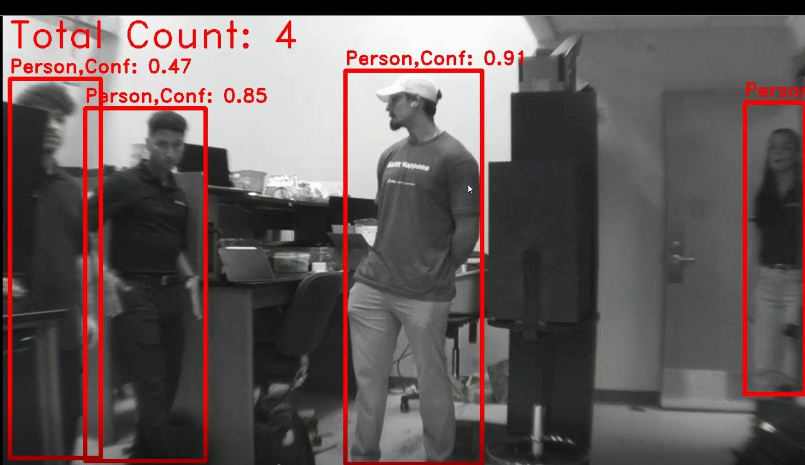
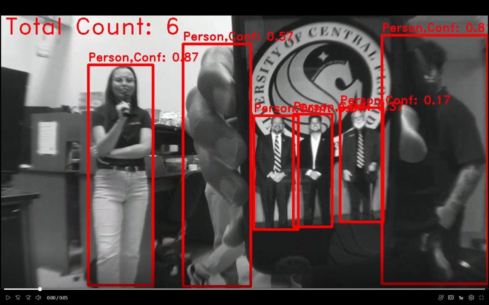
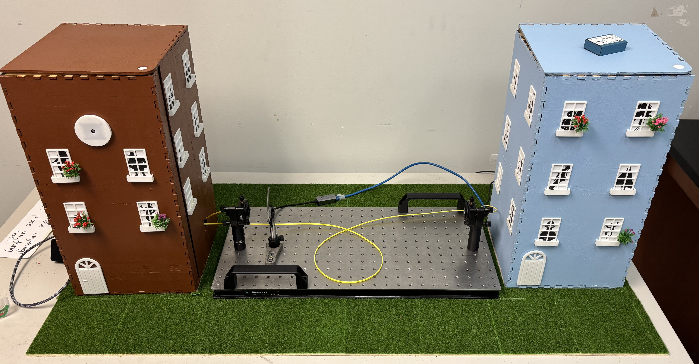

ISPY
This was my senior design project that I worked on with a team of four other engineering students. We desiged a security system that is harder to hack, wireless, and not reliant on the internet. The idea was to have a CMOS sensor designed with a custom lens that would be able to take a larger field view than a normal camera, detect how many people were in a room and transmit it over free-space optical communication. I designed the computer vision system that would read the live video feed from the CMOS sensor and detect how many people were in the room. I used YOLO verison 11 classifcation to narrow down detection to just people and then used a custom algorithm to count how many people were in the room. I also implemented YOLO object tracking to make the counter more accurate by tracking individuals walking in and out of frame. I had enough time to make the visual aspect similar to a real security camera feed with timestamp plus counter overlay and grayscaled video.

Demo
Presentation of our full project with all sub-sections working together.
Gallery









